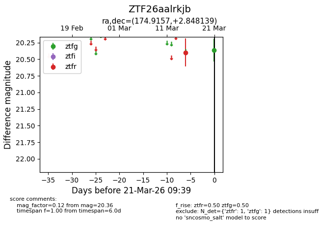
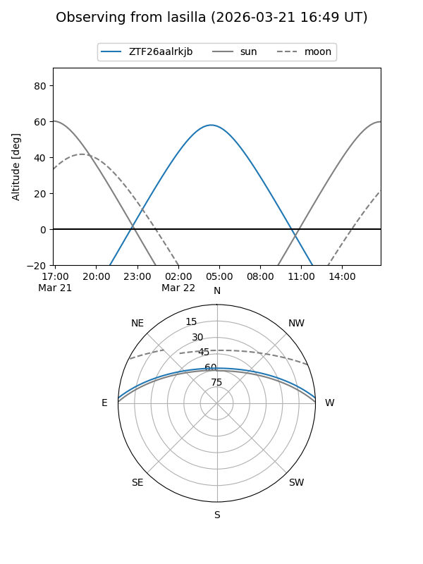
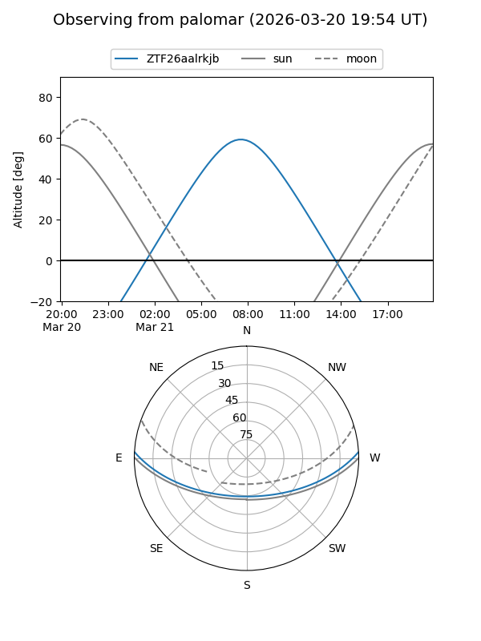

ZTF26aalrkjb
Target ZTF26aalrkjb at 2026-03-21 09:41
Aliases and brokers:
FINK: link
Lasair: link
ALeRCE: link
alt names
ZTF26aalrkjb (ztf,fink_ztf)
Coordinates:
equatorial (ra, dec) = 174.9157,+2.84814
equatorial (HMS+DMS) = 11:39:39.77,+02:50:53.30
galactic (l, b) = (264.5908,+60.26282)
Flags:
Photometry:
last ztfg=20.36, ztfr=20.40
1 ztfg, 1 ztfr detections
Lightcurve

Visibility


Additional plots